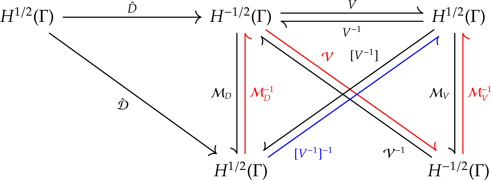
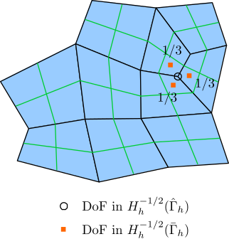
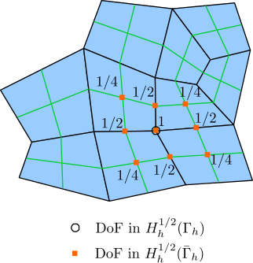
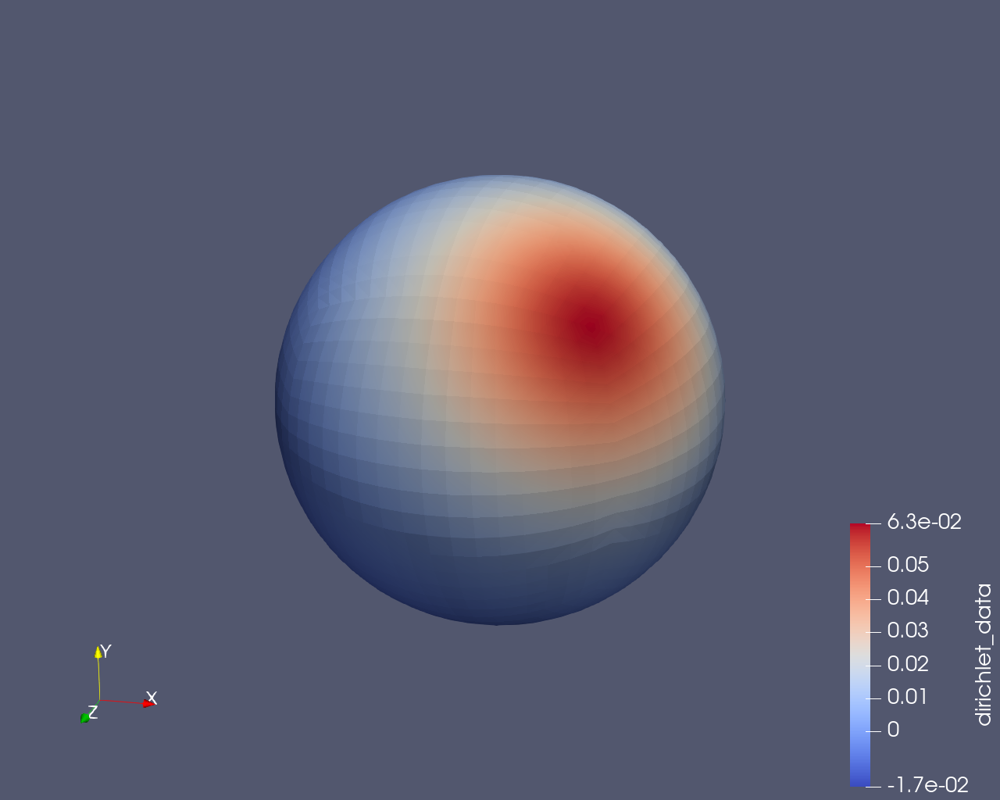
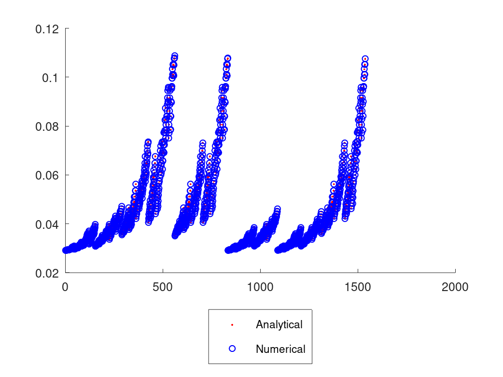

Solve the Laplace equation with a Neumann boundary condition on a sphere
Problem description
In this example, we demonstrate how to solve the Laplace equation with a Neumann boundary condition using HierBEM. The Laplace equation is
\[\begin{equation} \begin{aligned} -\nabla u &= 0 \quad x\in\Omega \\ \gamma_1^{\mathrm{int}}u &= g_{\mathrm{N}} \quad x\in\Gamma, \end{aligned} \end{equation}\]where the Neumann boundary condition \(g_{\mathrm{N}}\in H^{-1/2}(\Gamma)\). The problem domain is still the unit ball used in the previous example. The difference in this example is that we assign the interior conormal trace of the potential \(u\) as the Neumann boundary condition, i.e.
\[\begin{equation} \gamma_1^{\mathrm{int}}u = \frac{1}{4\pi}\frac{(n(x), x_0-x)}{\norm{x-x_0}^3} \quad x\in\Gamma. \label{eq:neumann-bc} \end{equation}\]Boundary integral equation and its matrix form for the Laplace Neumann problem
We have already known from the previous example about how to represent the potential in the domain \(\Omega\) with single layer and double layer potentials:
\[\begin{equation} u(x) = \int_{\Gamma} U^{\ast}(x,y) \gamma_{1,y}^{\mathrm{int}} u(y) \intd s_y - \int_{\Gamma} \gamma_{1,y}^{\mathrm{int}} U^{\ast}(x,y) \gamma_0^{\mathrm{int}} u(y) \intd s_y \quad x\in\Omega. \label{eq:representation-formula} \end{equation}\]By taking the interior conormal trace of this representation formula, we get the boundary integral equation (BIE) associated with the Laplace PDE
\[\begin{equation} (D \gamma_0^{\mathrm{int}}u)(x) = \left\{ \left[ (1-\sigma)I - K' \right] \gamma_1^{\mathrm{int}}u \right\}(x) = \left\{ \left[ (1-\sigma)I - K' \right] g_{\mathrm{N}} \right\}(x) \quad x\in\Gamma. \label{eq:bie-for-neumann} \end{equation}\]This is just the second equation in the Calderón system
\[\begin{equation} \begin{pmatrix} \gamma_0^{\rm int} u \\ \gamma_1^{\rm int} u \end{pmatrix} = \begin{pmatrix} (1-\sigma)I - K & V \\ D & \sigma I + K' \end{pmatrix} \begin{pmatrix} \gamma_0^{\rm int} u \\ \gamma_1^{\rm int} u \end{pmatrix}. \label{eq:calderon-system} \end{equation}\]With the given boundary condition in Equation \eqref{eq:neumann-bc}, the analytical solution of the BIE \eqref{eq:bie-for-neumann} is the potential on the sphere, which is generated by the Dirac source at \(x_0\)
\[\begin{equation} u(x) = U^{\ast}(x,x_0) = \frac{1}{4\pi\norm{x-x_0}} \quad x\in\Gamma. \label{eq:analytical-solution} \end{equation}\]Testing Equation \eqref{eq:bie-for-neumann} with \(v\in H^{1/2}(\Gamma)\) yields the variational formulation
\[\begin{equation} b_D(\gamma_0^{\mathrm{int}}u, v) = b_{(1-\sigma)I-K'}(g_{\mathrm{N}}, v). \end{equation}\]To discretize this variational formulation, we still use the piecewise linear Lagrange polynomial space as a finite dimensional approximation for \(H^{1/2}(\Gamma)\) and the piecewise constant function space for \(H^{-1/2}(\Gamma)\). The discretized matrix form is
\[\begin{equation} \mathcal{D}[u] = \left[ (1-\sigma)\mathcal{M} - \mathcal{K}' \right][g_{\mathrm{N}}]. \end{equation}\]N.B. The identity operator \(I\) maps from \(H^{-1/2}(\Gamma)\) to \(H^{-1/2}(\Gamma)\) and its Galerkin matrix \(\mathcal{M}\) maps from \(H_h^{-1/2}(\Gamma)\) to \(H_h^{1/2}(\Gamma)\).
Evaluation of the stabilization term for \(D\)
As mentioned in the previous example, the operator \(D\) is only semi-elliptic on \(H^{1/2}(\Gamma)\), therefore it should be stabilized so that the ellipticity will be restored in a subspace of \(H^{1/2}(\Gamma)\) and this subspace is orthogonal to the kernel of \(D\), i.e. \(\ker D\). If we use the \(L_2\)-inner product to define orthogonality in \(H^{1/2}(\Gamma)\), \(D\) will be elliptic in the subspace \(H_{\ast \ast}^{1/2}(\Gamma)\), which is defined as
\[\begin{equation} H_{\ast \ast}^{1/2}(\Gamma) := \{ v\in H^{1/2}(\Gamma): \langle v,\chi_k \rangle_{\Gamma} = 0, k=1,\cdots,r \}. \end{equation}\]Here we assume the boundary \(\Gamma\) has \(r\) disjoint components, i.e. \(\Gamma = \bigcup_{k=1}^r \Gamma_k\) and \(\Gamma_k \cap \Gamma_l = \Phi\). Each \(\chi_k\) above is an indicator function for a boundary component \(\Gamma_k\) and it belongs to \(H^{-1/2}(\Gamma)\). Then the stabilized bilinear form is
\[\begin{equation} b_{\hat{D}}(u,v) = \langle Du,v \rangle_{\Gamma} + \alpha \sum_{k=1}^r \langle u,\chi_k \rangle_{\Gamma} \langle v,\chi_k \rangle_{\Gamma}. \end{equation}\]and \(\alpha \sum_{k=1}^r \langle u,\chi_k \rangle_{\Gamma} \langle v,\chi_k \rangle_{\Gamma}\) is the stabilization term. In this term, the duality pairing between \(u\) and \(\chi_k\) as well as \(v\) and \(\chi_k\) should be evaluated. Let \(\{ \phi_i \}_{i=1}^n\) be the basis for \(H_h^{1/2}(\Gamma)\) and \(\{ \psi_j \}_{j=1}^m\) be the basis for \(H_h^{-1/2}(\Gamma)\), \(u\) and \(\chi_k\) can be expanded as
\[\begin{equation} u \approx u_h = \sum_{i=1}^n u_i \phi_i, \chi_k \approx (\chi_{k})_h = \sum_{j=1}^m \chi_{k,j} \psi_j. \end{equation}\]Their duality pairing is
\[\begin{equation} \langle u,\chi_k \rangle_{\Gamma} \approx \langle u_h,( \chi_k )_h \rangle_{\Gamma} = \sum_{i=1}^n \sum_{j=1}^m \langle \phi_i,\psi_j \rangle_{\Gamma} u_i \chi_{k,j}. \end{equation}\]N.B. In the complex valued case, complex conjugation should be applied to the second operand in the duality pairing. However, because the indicator function \(\chi_k\) is real valued, complex conjugation has no effect on it.
The matrix formulation of this duality pairing is
\[\begin{equation} \langle u,\chi_k \rangle_{\Gamma} \approx \langle u_h, (\chi_k)_h \rangle_{\Gamma} = \left( \mathcal{M}[\chi_k] \right)^{\mathrm{T}} [u], \end{equation}\]where \([\chi_k]\) is the vector of expansion coefficients for \(\chi_k\) and \([u]\) is the vector of expansion coefficients for \(u\). \(\mathcal{M}\) maps from \(H_h^{-1/2}(\Gamma)\) to \(H_h^{1/2}(\Gamma)\). The result of this matrix formulation is a scalar value.
Let the test function \(v\) be selected as basis functions \(\psi_1,\cdots,\psi_m\) respectively. For each \(\psi_j\), its expansion coefficients form the basis vector \(\boldsymbol{e}_j\). Then we obtain \(m\) scalar values from the stabilization term, which can be organized into a column vector as below.
\[\begin{equation} \begin{aligned} \alpha\sum_{k=1}^r \langle u,\chi_k \rangle_{\Gamma} \langle v,\chi_k \rangle_{\Gamma} &= \alpha \sum_{k=1}^r \begin{pmatrix} (\mathcal{M} [\chi_k])^{\mathrm{T}} [u] (\mathcal{M} [\chi_k])^{\mathrm{T}} \boldsymbol{e}_1 \\ \vdots \\ (\mathcal{M} [\chi_k])^{\mathrm{T}} [u] (\mathcal{M} [\chi_k])^{\mathrm{T}} \boldsymbol{e}_m \end{pmatrix} \end{aligned}. \end{equation}\]Because \((\mathcal{M} [\chi_k])^{\mathrm{T}} [u]\) is a scalar value and \((\mathcal{M} [\chi_k])^{\mathrm{T}} \boldsymbol{e}_j\) is the \(j\)-th component of the row vector \((\mathcal{M} [\chi_k])^{\mathrm{T}}\), the column vector becomes
\[\begin{equation} \alpha \sum_{k=1}^r (\mathcal{M}[\chi_k]) (\mathcal{M}[\chi_k])^{\mathrm{T}}[u]. \end{equation}\]Let \(a_k = \mathcal{M}[\chi_k]\), \(\mathcal{M}[\chi_k] ( \mathcal{M}[\chi_k] )^{\mathrm{T}}\) is the outer product of \(a_k\) with itself1. Then the Galerkin matrix for the stabilized bilinear form \(b_{\hat{D}}\) is
\[\begin{equation} \hat{\mathcal{D}} := \mathcal{D} + \alpha \sum_{k=1}^r a_k a_k^{\mathrm{T}}. \end{equation}\]The stabilized matrix form for the boundary integral equation is
\[\begin{equation} \hat{\mathcal{D}}[u] = \left[ (1-\sigma)\mathcal{M} - \mathcal{K}' \right][g_{\mathrm{N}}]. \end{equation}\]Operator preconditioning of \(\hat{D}\)
According to the operator preconditioning theory introduced in the previous example, the preconditioner for \(\hat{D}\) is \(V\). To build the inverse of the preconditioning matrix, we should follow the red route in the commutative diagram below.

The inverse of the preconditioning matrix is
\[\begin{equation} [V^{-1}]^{-1} = \mathcal{M}_V^{-1} \mathcal{V} \mathcal{M}_D^{-1}, \end{equation}\]Because \(\mathcal{M}_V\) is the transpose of \(\mathcal{M}_D\),
\[\begin{equation} [V^{-1}]^{-1} = \mathcal{M}_V^{-1} \mathcal{V} \mathcal{M}_V^{-\mathrm{T}}. \label{eq:inv-precond-mat} \end{equation}\]The mass matrix \(\mathcal{M}_V\) maps from the primal space \(H_h^{1/2}(\Gamma_h)\) (the domain space of the main operator \(\hat{D}\)) on the primal mesh \(\Gamma_h\) to the dual space \(H_h^{-1/2}(\hat{\Gamma}_h)\) (dual space of the primal space) on the dual mesh \(\hat{\Gamma}_h\):
\[\begin{equation} \mathcal{M}_V: H_h^{1/2}(\Gamma_h) \rightarrow H_h^{-1/2}(\hat{\Gamma}_h). \end{equation}\]The averaging matrix \(C_d: H_h^{-1/2}(\bar{\Gamma}_h) \rightarrow H_h^{-1/2}(\hat{\Gamma}_h)\) defines the way that a basis function in the dual space \(H_h^{-1/2}(\hat{\Gamma}_h)\) on the dual mesh \(\hat{\Gamma}_h\) is constructed from several basis functions in the dual space \(H_h^{-1/2}(\bar{\Gamma}_h)\) on the refined mesh \(\bar{\Gamma}_h\). Let \(i\) be a row index of \(C_d\). The support point of its corresponding DoF in \(H_h^{-1/2}(\hat{\Gamma}_h)\) is the center of a cell in the dual mesh, which is actually a vertex in the primal mesh. Let \(j\) be a column index of \(C_d\). The support point of its corresponding DoF in \(H_h^{-1/2}(\bar{\Gamma}_h)\) is the center of a cell in the refined mesh. When the vertex in the primal mesh corresponding to the \(i\)-th DoF in \(H_h^{-1/2}(\hat{\Gamma}_h)\) is also a vertex of the cell in the refined mesh which contains the \(j\)-th DoF in \(H_h^{-1/2}(\bar{\Gamma}_h)\), \(C_d(i,j) = 1/N_v\), where \(N_v\) is the number of cells in the refined mesh sharing the said vertex in the primal mesh; otherwise, \(C_d(i,j) = 0\).
This is illustrated in the following figure. The quadrangular cells with black borders are primal cells, while the cells with green borders are refined cells.

The coupling matrix \(C_p: H_h^{1/2}(\bar{\Gamma}_h) \rightarrow H_h^{1/2}(\Gamma_h)\) defines how a basis function in the primal space \(H_h^{1/2}(\Gamma_h)\) on the primal mesh \(\Gamma_h\) is constructed from several basis functions in the primal space \(H_h^{1/2}(\bar{\Gamma}_h)\) on the refined mesh \(\bar{\Gamma}_h\). Let \(i\) be a row index of \(C_p\). The support point of its DoF in \(H_h^{1/2}(\Gamma_h)\) is a vertex in the primal mesh. Let \(j\) be a column index of \(C_p\). The support point of its DoF in \(H_h^{1/2}(\bar{\Gamma}_h)\) is a vertex in the refined mesh. The coefficient \(C_p(i,j)\) is determined as below.
- When the support point of the \(j\)-th DoF in \(H_h^{1/2}(\bar{\Gamma}_h)\) is not adjacent to the support point of the \(i\)-th DoF in \(H_h^{1/2}(\Gamma_h)\), i.e. the two support points are not in a same cell in the refined mesh, \(C_p(i,j) = 0\).
- When the two support points are in a same cell in the refined mesh:
- If the support point of the \(j\)-th DoF in \(H_h^{1/2}(\bar{\Gamma}_h)\) is in the interior of a cell in the primal mesh, \(C_p(i,j) = 1/4\).
- If the support point of the \(j\)-th DoF in \(H_h^{1/2}(\bar{\Gamma}_h)\) is in the middle of an edge in the primal mesh, \(C_p(i,j) = 1/2\).
- If the two support points overlap, \(C_p(i,j) = 1\).
This is illustrated in the following figure.

Then the mass matrix \(\mathcal{M}_V\) is
\[\begin{equation} \mathcal{M}_V = C_d \mathcal{M}_V(\bar{\Gamma}_h) C_p^{\mathrm{T}}. \end{equation}\]The matrix for the preconditioner \(V\) is
\[\begin{equation} \mathcal{V} = C_d \mathcal{V}(\bar{\Gamma}_h) C_d^{\mathrm{T}}. \end{equation}\]The inverse of the preconditioning matrix is
\[\begin{equation} [V^{-1}]^{-1} = \left( C_d \mathcal{M}_V(\bar{\Gamma}_h) C_p^{\mathrm{T}} \right)^{-1} \left( C_d \mathcal{V}(\bar{\Gamma}_h) C_d^{\mathrm{T}} \right) \left( C_d \mathcal{M}_V(\bar{\Gamma}_h) C_p^{\mathrm{T}} \right)^{-\mathrm{T}}. \end{equation}\]Source code explanation
The source code for this example is in the file hierbem/examples/laplace-neumann/solve-laplace-neumann.cu. A class NeumannBC is defined as the Neumann boundary condition described in Equation \eqref{eq:neumann-bc}.
class NeumannBC : public Function<3>
{
public:
NeumannBC()
: Function<3>()
, x0(0., 0., 0.)
, center(0.0, 0.0, 0.0)
, radius(1.0)
{}
NeumannBC(const Point<3> &x0_, const Point<3> ¢er_, double radius_)
: Function<3>()
, x0(x0_)
, center(center_)
, radius(radius_)
{}
double
value(const Point<3> &p, const unsigned int component = 0) const
{
(void)component;
Tensor<1, 3> diff_vector = x0 - p;
return ((p - center) * diff_vector) / 4.0 / numbers::PI /
std::pow(diff_vector.norm(), 3) / radius;
}
private:
// Location of the unit Dirac source.
Point<3> x0;
Point<3> center;
double radius;
};
The Dirichlet data described by Equation \eqref{eq:analytical-solution} is defined in the class AnalyticalSolution.
class AnalyticalSolution : public Function<3>
{
public:
AnalyticalSolution()
: Function<3>()
, x0(0., 0., 0.)
{}
AnalyticalSolution(const Point<3> &x0_)
: Function<3>()
, x0(x0_)
{}
double
value(const Point<3> &p, const unsigned int component = 0) const
{
(void)component;
return 1.0 / 4.0 / numbers::PI / (p - x0).norm();
}
private:
// Location of the unit Dirac source.
Point<3> x0;
};
In the function output_analytical_solution, we use the DoF handler for the Dirichlet space to interpolate the analytical solution on the sphere.
template <int dim,
int spacedim,
typename RangeNumberType,
typename KernelNumberType>
void
output_analytical_solution(
const LaplaceBEM<dim, spacedim, RangeNumberType, KernelNumberType> &bem,
const Point<spacedim> &source_loc)
{
const DoFHandler<dim, spacedim> &dof_handler =
bem.get_dof_handler_dirichlet();
Vector<double> analytical_solution(dof_handler.n_dofs());
VectorTools::interpolate(bem.get_mappings()[1]->get_mapping(),
dof_handler,
AnalyticalSolution(source_loc),
analytical_solution);
std::ofstream out("analytical-solution.output");
print_vector_to_mat(out, "analytical_solution", analytical_solution);
out.close();
}
In the main function, a LaplaceBEM object is created and its problem type is set to NeumannBCProblem. The subsequent source code in main is almost the same as that for solving the Dirichlet problem, except that we now assign a Neumann boundary condition to the LaplaceBEM object.
Point<spacedim> source_loc(1., 1., 1.);
NeumannBC neumann_bc(source_loc, center, radius);
bem.assign_neumann_bc(neumann_bc);
Same as the Dirichlet solver, the bem.run() function includes the following stages:
-
setup_system: We create function spaces as well as corresponding cluster trees for \(H_h^{1/2}(\Gamma_h)\) (dirichlet_space_on_neumann_domain_) and \(H_h^{-1/2}(\Gamma_h)\) (neumann_space_on_neumann_domain_).dirichlet_space_on_neumann_domain_ = std::make_unique< BEMFunctionSpace<dim, spacedim, SearchableMaterialIdContainer, real_type>>( dof_handler_for_dirichlet_space_, n_min_for_ct_); neumann_space_on_neumann_domain_ = std::make_unique< BEMFunctionSpace<dim, spacedim, SearchableMaterialIdContainer, real_type>>( dof_handler_for_neumann_space_, n_min_for_ct_);Next we create bilinear forms \(b_{\hat{D}}\) and \(b_{(1-\sigma)I-K'}\), then build corresponding block cluster trees.
bD1_ = std::make_unique<BEMBilinearForm<dim, spacedim, SearchableMaterialIdContainer, HyperSingularKernelRegular, RangeNumberType, KernelNumberType>>( *dirichlet_space_on_neumann_domain_, *dirichlet_space_on_neumann_domain_); bI2K_prime2_ = std::make_unique<BEMBilinearForm<dim, spacedim, SearchableMaterialIdContainer, AdjointDoubleLayerKernel, RangeNumberType, KernelNumberType>>( *neumann_space_on_neumann_domain_, *dirichlet_space_on_neumann_domain_); bD1_->build_block_cluster_tree(eta_, n_min_for_bct_); bI2K_prime2_->build_block_cluster_tree(eta_, n_min_for_bct_);We interpolate the Neumann boundary condition into a vector in the external DoF numbering first (
neumann_bc_), then convert it to internal DoF numbering (neumann_bc_internal_dof_numbering_).interpolate_neumann_bc(); neumann_data_ = neumann_bc_; neumann_bc_internal_dof_numbering_.reinit(n_dofs_for_neumann_space); neumann_space_on_neumann_domain_ ->convert_vector_e2i(neumann_bc_, neumann_bc_internal_dof_numbering_);Finally, we allocate memory for the right hand side vector and the solution vector.
system_rhs_on_neumann_domain_.reinit(n_dofs_for_dirichlet_space); dirichlet_data_.reinit(n_dofs_for_dirichlet_space); dirichlet_data_on_neumann_domain_internal_dof_numbering_.reinit( n_dofs_for_dirichlet_space); -
assemble_hmatrix_system: The bilinear form \(b_{(1-\sigma)I-K'}\) is discretized into the \(\mathcal{H}\)-matrix \((1-\sigma)\mathcal{M} - \mathcal{K}'\). Its product with the Neumann boundary condition vectorneumann_bc_internal_dof_numbering_is the right hand side vectorsystem_rhs_on_neumann_domain_.I2K_prime2_hmat_ = bI2K_prime2_->build_hmatrix_with_mass_matrix( thread_num_, max_hmat_rank_, aca_relative_error_, CUDAKernelNumberType(-1.0), real_type(0.5), SauterQuadratureRule<dim>(5, 4, 4, 3), QGauss<dim>(fe_order_for_dirichlet_space_ + 1), mappings_, material_id_to_mapping_index_, subdomain_topology_); I2K_prime2_hmat_->vmult(system_rhs_on_neumann_domain_, neumann_bc_internal_dof_numbering_);Before discretizing the bilinear form \(b_{\hat{D}}\) into the \(\mathcal{H}\)-matrix \(\hat{\mathcal{D}}\), we need to compute stabilization terms. Because the boundary \(\Gamma\) of our problem domain has only one component, there is only one stabilization term, which is stored in the member variable
mass_vmult_weq_of theLaplaceBEMobject.compute_stabilization_terms_for_D1_hmat();Then the \(\mathcal{H}\)-matrix \(\hat{\mathcal{D}}\) can be assembled including the stabilization term.
D1_hmat_ = bD1_->build_hmatrix_with_regularization_terms( thread_num_, max_hmat_rank_, aca_relative_error_, CUDAKernelNumberType(1.0), mass_vmult_weq_, alpha_for_neumann_, SauterQuadratureRule<dim>(5, 4, 4, 3), mappings_, material_id_to_mapping_index_, subdomain_topology_); -
assemble_hmatrix_preconditioner: In this function, we build the preconditioner for the Neumann problem, which is encapsulated in the classPreconditionerForLaplaceNeumann.mg_tria_for_preconditioner_.copy_triangulation(tria_); mg_tria_for_preconditioner_.refine_global(); if (operator_preconditioner_neumann_ != nullptr) { delete operator_preconditioner_neumann_; operator_preconditioner_neumann_ = nullptr; } operator_preconditioner_neumann_ = new PreconditionerForLaplaceNeumann< dim, spacedim, RangeNumberType, KernelNumberType>( fe_for_dirichlet_space_, fe_for_neumann_space_, mg_tria_for_preconditioner_, dirichlet_space_on_neumann_domain_->get_internal_to_external_dof_numbering(), dirichlet_space_on_neumann_domain_->get_external_to_internal_dof_numbering()); operator_preconditioner_neumann_->setup_preconditioner( thread_num_, HMatrixParameters(n_min_for_ct_, n_min_for_bct_, eta_, max_hmat_rank_, aca_relative_error_), subdomain_topology_, mappings_, material_id_to_mapping_index_, SurfaceNormalDetector<dim, spacedim>(subdomain_topology_), SauterQuadratureRule<dim>(5, 4, 4, 3), QGauss<2>(fe_for_dirichlet_space_.degree + 1)); -
solve: Because the linear system is symmetric, we solve it with the iterative CG solver and the above operator preconditioner. Similar to the Dirichlet problem, two types of \(\mathcal{H}\)-matrix/vector multiplication,vmultandTvmultare needed. So when we set the H-matrix/vector multiplication strategy for the system \(\mathcal{H}\)-matrix \(\hat{\mathcal{D}}\) and the \(\mathcal{H}\)-matrix \(\mathcal{V}(\bar{\Gamma}_h)\) in the preconditioner, the last two arguments should betrue.SolverControl solver_control(1000, 1e-8, true, true); SolverCGGeneral<Vector<RangeNumberType>> solver(solver_control); set_hmatrix_vmult_strategy_for_iterative_solver(*D1_hmat_, vmult_type_, true, true); set_hmatrix_vmult_strategy_for_iterative_solver( operator_preconditioner_neumann_->get_preconditioner_hmatrix(), vmult_type_, true, true); solver.solve(*D1_hmat_, dirichlet_data_on_neumann_domain_internal_dof_numbering_, system_rhs_on_neumann_domain_, *operator_preconditioner_neumann_); -
output_results: Add the solution vector and the boundary condition vector to theDataOutobject. Write the solution vector to a text file.data_out.add_data_vector(dof_handler_for_dirichlet_space_, ppp dirichlet_data_, "dirichlet_data"); data_out.add_data_vector(dof_handler_for_neumann_space_, neumann_bc_, "neumann_data"); data_out.build_patches(); data_out.write_vtk(vtk_output); print_vector_to_mat(data_file, "solution", dirichlet_data_, false);
Analytical solution vector is computed and written into a text file by calling the function output_analytical_solution after bem.run() finishes.
Results
The following figure shows the distribution of the potential on the sphere.

The solution vector of the Neumann problem is in the subspace \(H_{\ast \ast}^{1/2}(\Gamma)\). Meanwhile, the analytical solution in Equation \eqref{eq:analytical-solution} is not enforced within this subspace. Actually, it has a constant difference with the numerical solution. This is because the solution of the Neumann problem is only unique when it is considered as an equivalence class in the quotient space \(H^{1/2}(\Gamma)/\ker D\). To make the numerical solution vector overlap with the analytical solution vector, it should be added with a constant. The following figure shows the analytical solution and the shifted numerical solution.

Footnotes
1 The outer product here is only formal, i.e. in the complex valued case, there is no complex conjugation applied to the second \(a_k\).